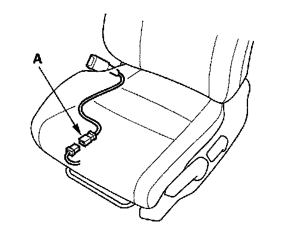
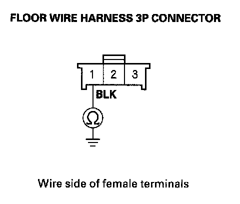
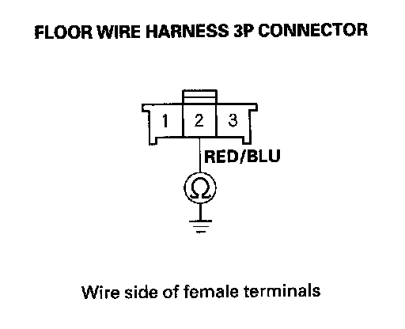

DTC 61-2x
DTC 61-2x ("x" can be 0 thru 9 or A thru F): Short in Driver's Seat Belt Buckle Switch1. Erase the DTC memory.
2. Turn the ignition switch ON (II), then buckle and unbuckle the driver's seat belt several times.
3. Read the DTC.
Is DTC 61-2x indicated?
YES - Go to step 4.
NO - Intermittent failure, system is OK at this time. Go to Troubleshooting Intermittent Failures. If another DTC is indicated, go to the DTC Troubleshooting Index.
4. Turn the ignition switch OFF.

5. Disconnect the floor wire harness 3P connector from the driver's seat belt buckle switch 3P connector (A).
6. Turn the ignition switch ON (II).
7. From the SRS menu, select PARAMETER INFORMATION menu, select "FRONT LEFT BUCKLE."
Is OPEN indicated on the HDS?
YES - Replace the driver's seat belt buckle assembly then clear the DTC.
NO - Go to step 8.
8. Turn the ignition switch OFF.

9. Check resistance between the No. 1 terminal of the floor wire harness 3P connector and body ground. There should be 0 - 1 ohm.
Is the resistance as specified?
YES - Short to ground in the floor wire harness; replace the floor wire harness.
NO - Go to step 10.
10. Disconnect the negative cable from the battery, and wait for 3 minutes.
11. Disconnect the seat belt tensioner 4P connectors and both seat belt buckle tensioner 4P connectors.
12. Disconnect SRS unit connector B (28P) from the SRS unit.

13. Check resistance between the No. 2 terminals of the floor wire harness 3P connector and body ground. There should be an open circuit or at least 1 Mohm.
Is there continuity?
YES - Short to ground in the floor wire harness; replace the floor wire harness.
NO - Faulty SRS unit; replace the SRS unit.